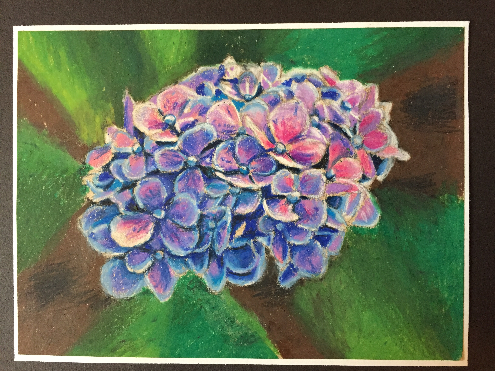
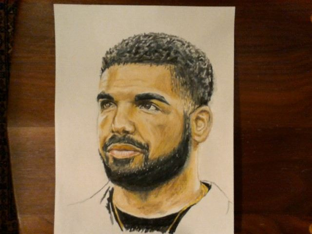
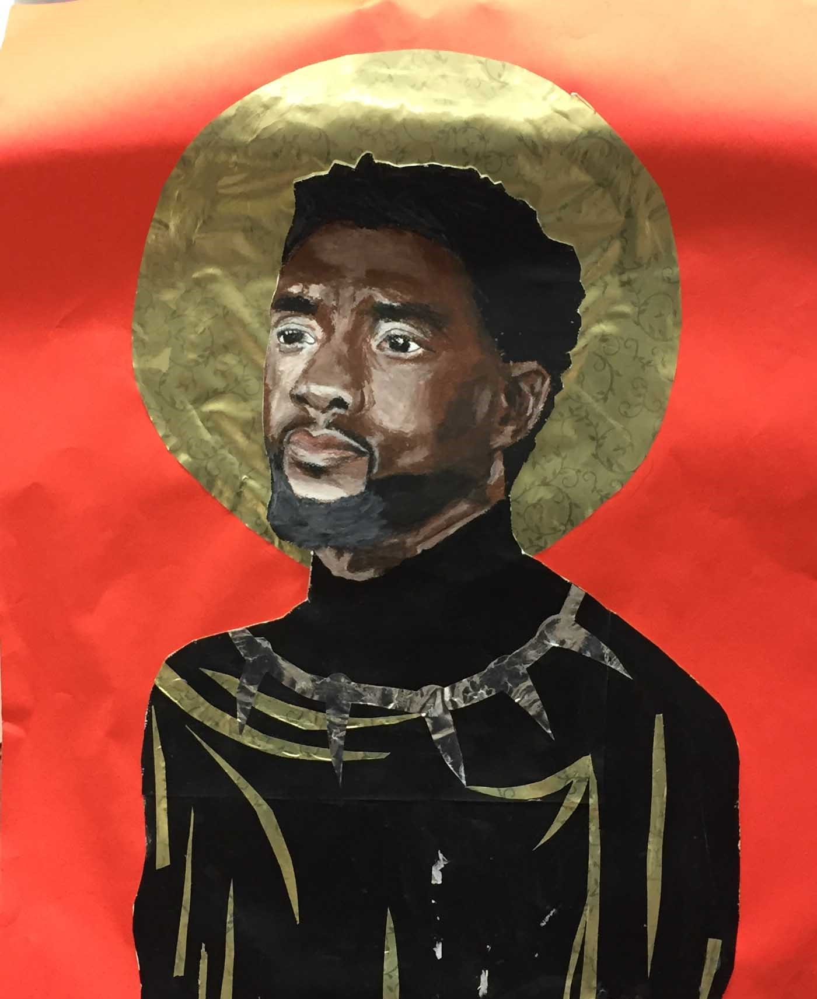
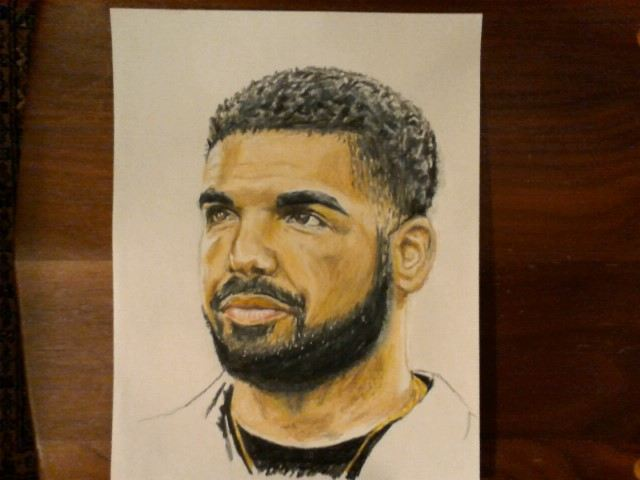
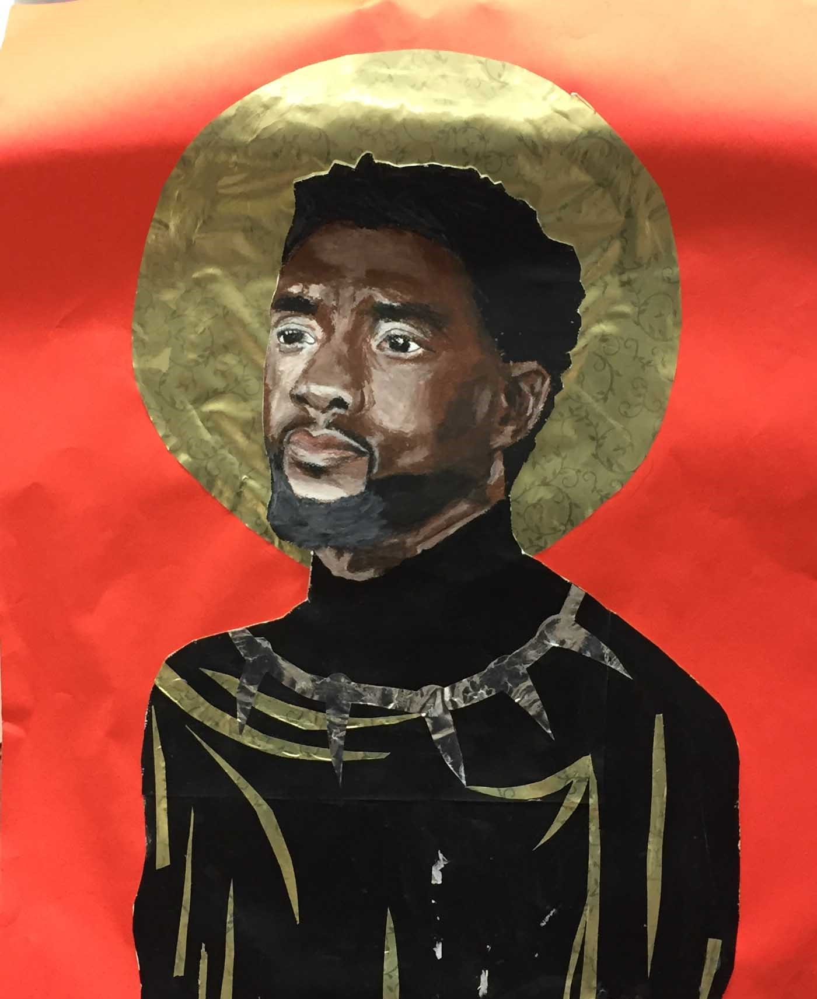

My approach to creating a drawing or painting usually revolves around observation. I alter the image in front of me to create a more interesting composition or subject matter. In this way, my focus is not only on realism and detail, but on the overall feeling of the piece. I am inspired to create a drawing when I see something that strikes me as beautiful or pleasing in some way. It is always a selfish decision. Sometimes I notice light hitting an object in a particular way or a shape created by forms and I hastily capture it on paper before the moment passes and the beauty is gone. I often develop it further to create a finished piece. I NEED TO ADD THE WALTER WHITE ONE, THE CUP AND BOWL
If you try to steal this work and sell it I will be mad. So please don't. Click here for my Wikipedia page.



 


